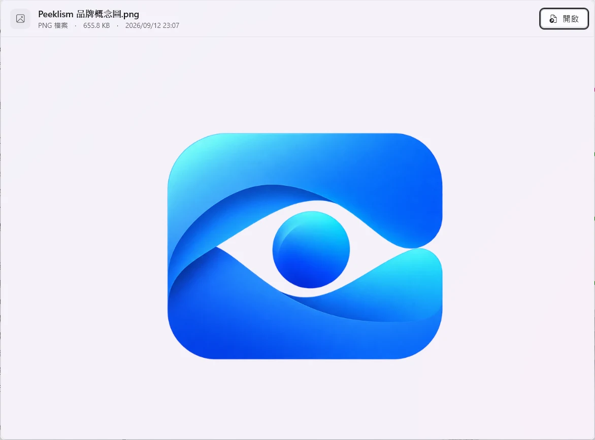
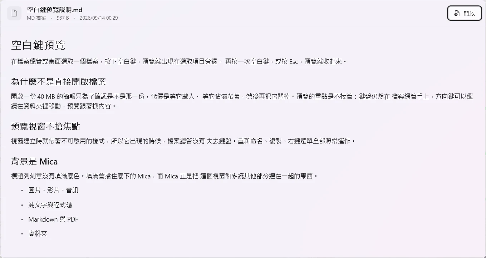
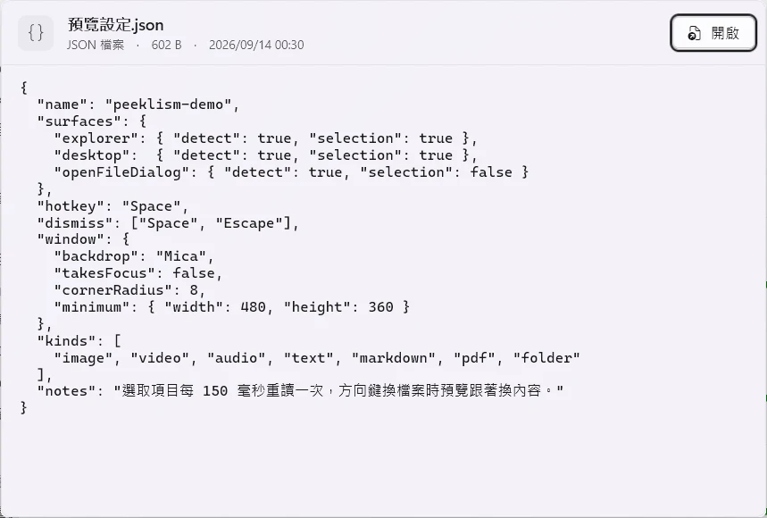

選取檔案
按空白鍵
看完就繼續
試試預覽怎麼跟著檔案走。
選取下方的示範檔案，按空白鍵開關預覽。方向鍵會切換檔案，預覽視窗留在原位。
方向鍵換檔 Esc 收回
按空白鍵，預覽就出現。
正在預覽品牌概念圖.png
這是網站示範，不會讀取電腦上的檔案。預覽畫面使用實際 Peeklism 截圖。
檔案總管仍保有
鍵盤焦點。
預覽視窗不會搶走焦點。方向鍵、重新命名、複製和右鍵選單仍由檔案總管接收。
換檔案，視窗不跳動
選取項目改變時只更新內容，不重新置中，也不跟著改變大小。
打字時，空白鍵仍能輸入空格
鍵盤 hook 只在支援的前景介面掛上；離開檔案總管、桌面或開啟檔案對話框時就會卸下。
要看得更仔細，開完整查看器
從預覽、Windows 的「開啟檔案」選單或系統匣進入。需要放大、搜尋或長時間閱讀時，改用獨立視窗。
按一次預覽，
再按一次收回。
要放大或搜尋，就開完整查看器。
0.6.0 加入獨立的唯讀查看器。圖片可縮放、拖移與旋轉；影音有播放控制；PDF 可搜尋、選取文字與列印。


完整查看器支援拖放、多選、同類檔案切換與全螢幕。設定視窗可調整登入啟動、預覽置頂，以及第一次預覽速度。
檔案總管與桌面，
都能按空白鍵預覽。
Peeklism 先辨認前景介面，再讀取目前選取項目。
檔案總管
選取項目可直接讀取，不需注入程式碼。
桌面
和檔案總管使用同一套空白鍵操作。
開啟檔案對話框
已能辨認視窗，讀取選取項目尚未完成。
圖片、文件、影音，也包括資料夾。
預覽維持輕量。遇到未知格式，仍會顯示檔名、大小和修改時間。
圖片
PNG、JPEG、GIF、WebP、HEIC 等，依圖片比例安排預覽。
影片與音訊
直接播放，附控制列；預設靜音。
純文字與程式碼
可選取、可捲動，快速預覽讀取開頭 256 KB。
Markdown
標題、清單、表格與程式碼在預覽中排版。
視窗先出現，再逐頁載入；快速預覽最多顯示前 25 頁。
資料夾
列出內容與項目總數。
下載 Peeklism 安裝檔
Peeklism.Setup.exe 會為電腦選擇合適的 Windows App 執行環境。安裝在目前使用者帳號，不需要系統管理員權限。
下載 0.6.0 安裝檔 查看發行說明與 SHA-256 校驗檔安裝前確認
- 系統Windows 11 build 26100 以上、x64
- PDF 與文件需要 Microsoft Edge WebView2 Runtime
- 部分影音格式取決於電腦已安裝的 Windows 解碼器
儲存庫目前為私有，下載需登入具有存取權限的 GitHub 帳號。安裝檔尚未簽章，Windows 可能顯示警告。